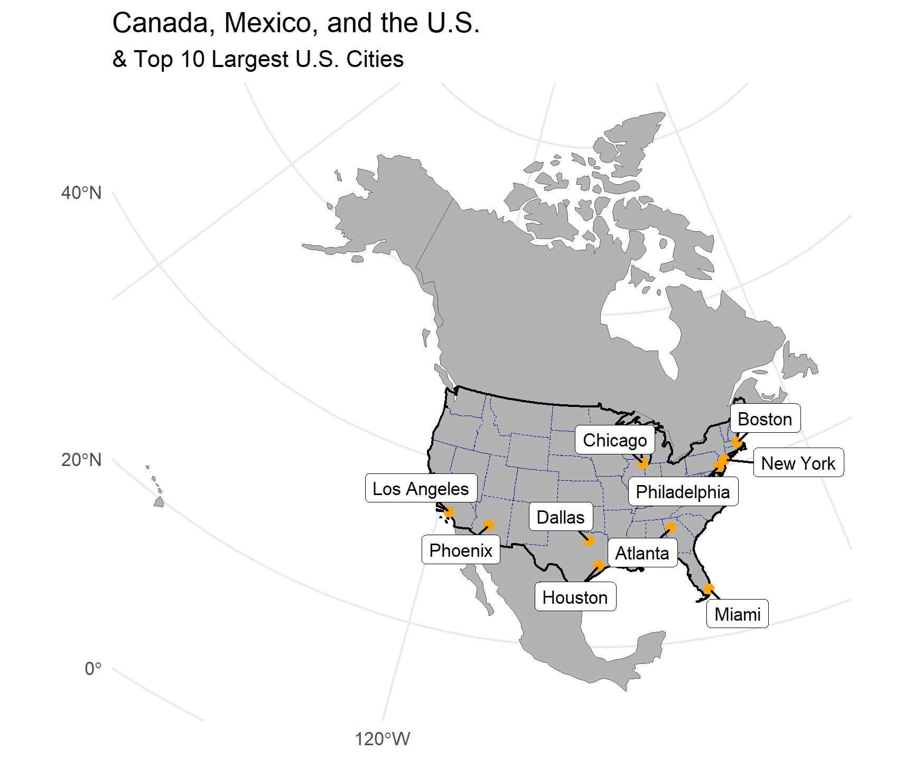
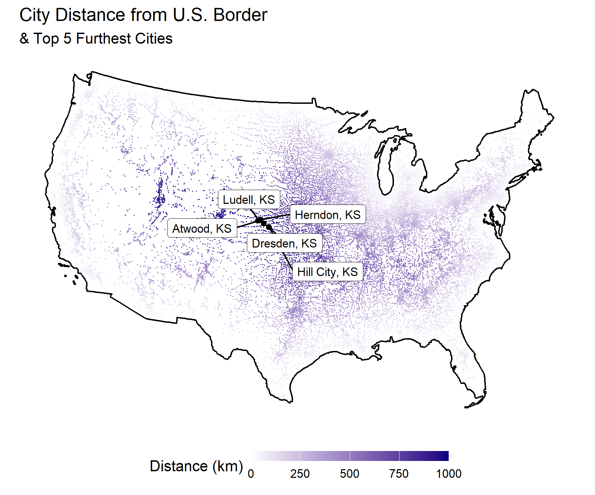
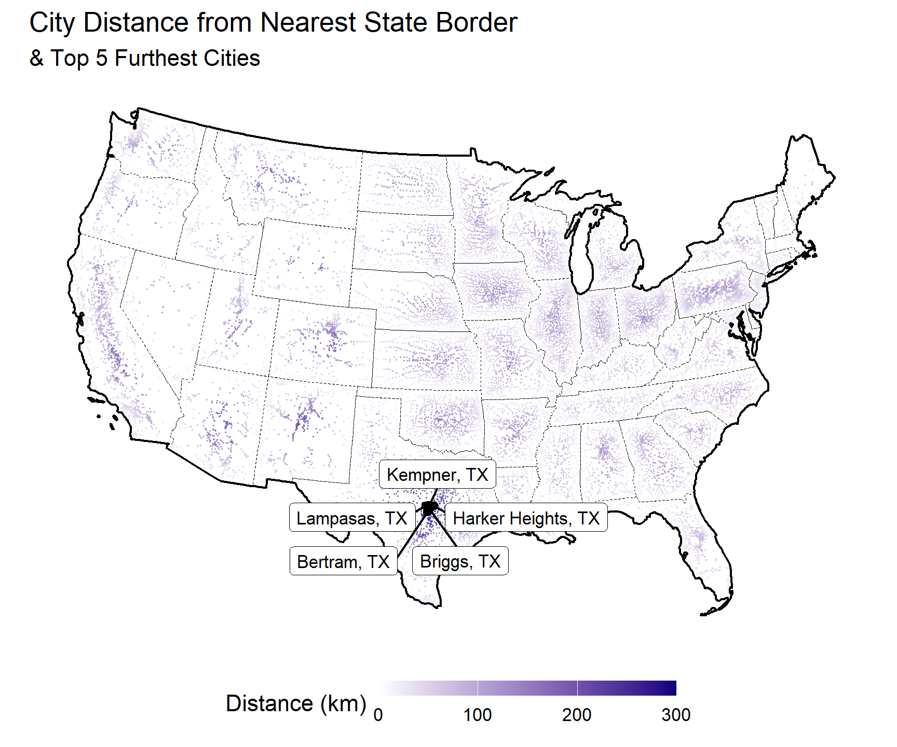
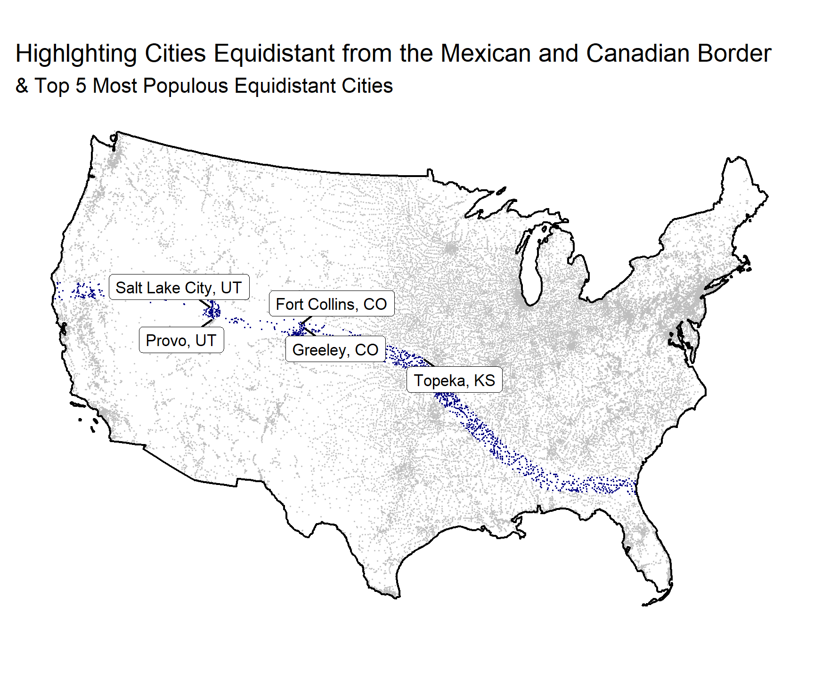
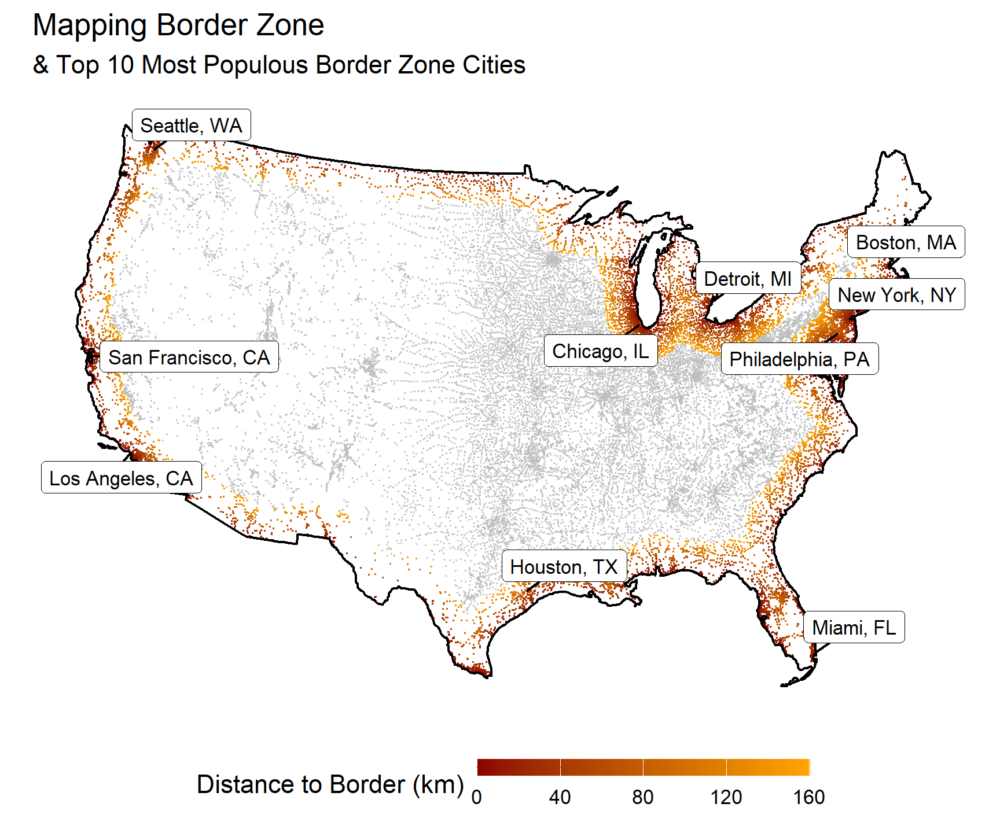
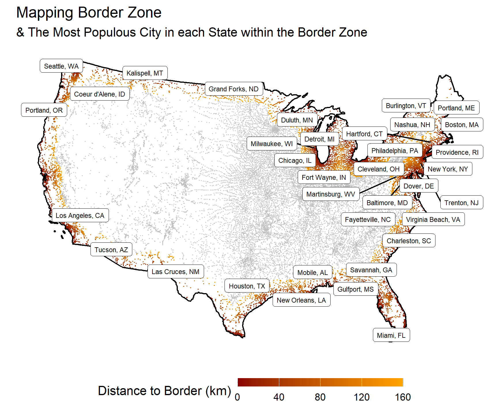

Code
# Defining proj4 string
eqdc <- '+proj=eqdc +lat_0=40 +lon_0=-96 +lat_1=20 +lat_2=60 +x_0=0 +y_0=0 +datum=NAD83 +units=m +no_defs'
# Turning off s2
sf_use_s2(FALSE)Ecosystem Science and Sustainability 523C
# Defining proj4 string
eqdc <- '+proj=eqdc +lat_0=40 +lon_0=-96 +lat_1=20 +lat_2=60 +x_0=0 +y_0=0 +datum=NAD83 +units=m +no_defs'
# Turning off s2
sf_use_s2(FALSE)# Loading boundaries
usa <- USAboundaries::us_states(resolution = "low")
# Filtering for states in CONUS
usa <- usa %>%
filter(jurisdiction_type == "state" & !state_abbr %in% c("AK", "HI"))
# Checking projected coordinate system
st_crs(usa)Coordinate Reference System:
User input: EPSG:4326
wkt:
GEOGCRS["WGS 84",
DATUM["World Geodetic System 1984",
ELLIPSOID["WGS 84",6378137,298.257223563,
LENGTHUNIT["metre",1]]],
PRIMEM["Greenwich",0,
ANGLEUNIT["degree",0.0174532925199433]],
CS[ellipsoidal,2],
AXIS["geodetic latitude (Lat)",north,
ORDER[1],
ANGLEUNIT["degree",0.0174532925199433]],
AXIS["geodetic longitude (Lon)",east,
ORDER[2],
ANGLEUNIT["degree",0.0174532925199433]],
USAGE[
SCOPE["Horizontal component of 3D system."],
AREA["World."],
BBOX[-90,-180,90,180]],
ID["EPSG",4326]]# Transforming to our system (eqdc - defined in 1.1)
usa <- st_transform(usa, eqdc)
# Checking again... success!
## this is something I like to do when processing spatial data to make sure everything has the same projected coordinate system.
st_crs(usa)Coordinate Reference System:
User input: +proj=eqdc +lat_0=40 +lon_0=-96 +lat_1=20 +lat_2=60 +x_0=0 +y_0=0 +datum=NAD83 +units=m +no_defs
wkt:
PROJCRS["unknown",
BASEGEOGCRS["unknown",
DATUM["North American Datum 1983",
ELLIPSOID["GRS 1980",6378137,298.257222101,
LENGTHUNIT["metre",1]],
ID["EPSG",6269]],
PRIMEM["Greenwich",0,
ANGLEUNIT["degree",0.0174532925199433],
ID["EPSG",8901]]],
CONVERSION["unknown",
METHOD["Equidistant Conic",
ID["EPSG",1119]],
PARAMETER["Latitude of false origin",40,
ANGLEUNIT["degree",0.0174532925199433],
ID["EPSG",8821]],
PARAMETER["Longitude of false origin",-96,
ANGLEUNIT["degree",0.0174532925199433],
ID["EPSG",8822]],
PARAMETER["Latitude of 1st standard parallel",20,
ANGLEUNIT["degree",0.0174532925199433],
ID["EPSG",8823]],
PARAMETER["Latitude of 2nd standard parallel",60,
ANGLEUNIT["degree",0.0174532925199433],
ID["EPSG",8824]],
PARAMETER["Easting at false origin",0,
LENGTHUNIT["metre",1],
ID["EPSG",8826]],
PARAMETER["Northing at false origin",0,
LENGTHUNIT["metre",1],
ID["EPSG",8827]]],
CS[Cartesian,2],
AXIS["(E)",east,
ORDER[1],
LENGTHUNIT["metre",1,
ID["EPSG",9001]]],
AXIS["(N)",north,
ORDER[2],
LENGTHUNIT["metre",1,
ID["EPSG",9001]]]]# Getting country boundaries - these are already in sf format
north_america <- rnaturalearth::countries110
# Filtering for countries we want
north_america <- north_america %>%
filter(ADMIN %in% c("Mexico", "Canada", "United States of America"))
# Checking coordinate system
st_crs(north_america)Coordinate Reference System:
User input: WGS 84
wkt:
GEOGCRS["WGS 84",
DATUM["World Geodetic System 1984",
ELLIPSOID["WGS 84",6378137,298.257223563,
LENGTHUNIT["metre",1]]],
PRIMEM["Greenwich",0,
ANGLEUNIT["degree",0.0174532925199433]],
CS[ellipsoidal,2],
AXIS["latitude",north,
ORDER[1],
ANGLEUNIT["degree",0.0174532925199433]],
AXIS["longitude",east,
ORDER[2],
ANGLEUNIT["degree",0.0174532925199433]],
ID["EPSG",4326]]# Transforming to eqdc
north_america <- st_transform(north_america, eqdc)
# Checking... success!
st_crs(usa) == st_crs(north_america)[1] TRUE# Reading csv
cities <- readr::read_csv("lab-02-data/uscities.csv")
# Filtering for those in states we want
cities <- cities %>%
filter(state_id %in% usa$stusps)
# Converting into spatial object - original lat/lon are WGS84 (EPSG:4326)
cities_sf <- st_as_sf(cities, coords = c("lng", "lat"), crs = 4326)
# Transforming to eqdc
cities_sf <- st_transform(cities_sf, eqdc)
# Checking... success!
st_crs(usa) == st_crs(cities_sf)[1] TRUE# Duplicating original "usa" sf to be "states" because we'll need it later
states <- usa
# Converting usa to single polygon with resolved boundaries (st_union), casting to MULTILINESTRING to get outer border
usa <- st_union(usa) %>%
st_cast("MULTILINESTRING")
# Adding distances to cities sf
cities_sf <- cities_sf %>%
mutate(dist_USA_border = st_distance(cities_sf, usa),
dist_USA_border_km = set_units(dist_USA_border, "km"))
# Creating table - again, not sure what's up with the captions? they show up in RStudio but not in html?
cities_sf %>%
st_drop_geometry() %>%
select(city, state_name, dist_USA_border_km) %>%
slice_max(order_by = dist_USA_border_km, n = 5) %>%
flextable() %>%
set_header_labels(
city = "City",
state_name = "State",
dist_USA_border_km = "Distance to USA Border"
) %>%
width(j = 1:3, 2) %>%
align(align = "center", part = "all") %>%
set_caption("Top 5 USA Cities Farthest from USA Border")City | State | Distance to USA Border |
|---|---|---|
Ludell | Kansas | 1,012.508 [km] |
Dresden | Kansas | 1,012.398 [km] |
Herndon | Kansas | 1,007.763 [km] |
Hill City | Kansas | 1,005.140 [km] |
Atwood | Kansas | 1,004.734 [km] |
# Converting states to single polygon with preserved boundaries (st_combine), casting to MULTILINESTRING to get state boundaries
states_combined <- st_combine(states) %>%
st_cast("MULTILINESTRING")
# Adding distances to cities sf
cities_sf <- cities_sf %>%
mutate(dist_state_border = st_distance(cities_sf, states_combined),
dist_state_border_km = set_units(dist_state_border, "km"))
# Creating table - again, not sure what's up with the captions? they show up in RStudio but not in html?
cities_sf %>%
st_drop_geometry() %>%
select(city, state_name, dist_state_border_km) %>%
slice_max(order_by = dist_state_border_km, n = 5) %>%
flextable() %>%
set_header_labels(
city = "City",
state_name = "State",
dist_state_border_km = "Distance to State Border"
) %>%
width(j = 1:3, 2) %>%
align(align = "center", part = "all") %>%
set_caption("Top 5 USA Cities Farthest from State Borders")City | State | Distance to State Border |
|---|---|---|
Briggs | Texas | 309.4150 [km] |
Lampasas | Texas | 308.9216 [km] |
Kempner | Texas | 302.5868 [km] |
Bertram | Texas | 302.5776 [km] |
Harker Heights | Texas | 298.8138 [km] |
# Isolating Mexico, casting for border
mexico <- north_america %>%
filter(ADMIN == "Mexico") %>%
st_cast("MULTILINESTRING")
# Adding distances to cities sf
cities_sf <- cities_sf %>%
mutate(dist_MEX_border = st_distance(cities_sf, mexico),
dist_MEX_border_km = set_units(dist_MEX_border, "km"))
# Creating table - again, not sure what's up with the captions? they show up in RStudio but not in html?
cities_sf %>%
st_drop_geometry() %>%
select(city, state_name, dist_MEX_border_km) %>%
slice_max(order_by = dist_MEX_border_km, n = 5) %>%
flextable() %>%
set_header_labels(
city = "City",
state_name = "State",
dist_MEX_border_km = "Distance to Mexican Border"
) %>%
width(j = 1:3, 2) %>%
align(align = "center", part = "all") %>%
set_caption("Top 5 USA Cities Farthest from the Mexican Border")City | State | Distance to Mexican Border |
|---|---|---|
Grand Isle | Maine | 3,282.825 [km] |
Caribou | Maine | 3,250.330 [km] |
Presque Isle | Maine | 3,234.570 [km] |
Oakfield | Maine | 3,175.577 [km] |
Island Falls | Maine | 3,162.285 [km] |
# Isolating Canada, casting for border
canada <- north_america %>%
filter(ADMIN == "Canada") %>%
st_cast("MULTILINESTRING")
# Adding distances to cities sf (and getting rid of border columns in meters)
cities_sf <- cities_sf %>%
mutate(dist_CAN_border = st_distance(cities_sf, canada),
dist_CAN_border_km = set_units(dist_CAN_border, "km")) %>%
select(-c(dist_USA_border, dist_state_border, dist_MEX_border, dist_CAN_border))
# Creating table - again, not sure what's up with the captions? they show up in RStudio but not in html?
cities_sf %>%
st_drop_geometry() %>%
select(city, state_name, dist_CAN_border_km) %>%
slice_max(order_by = dist_CAN_border_km, n = 5) %>%
flextable() %>%
set_header_labels(
city = "City",
state_name = "State",
dist_CAN_border_km = "Distance to Canadian Border"
) %>%
width(j = 1:3, 2) %>%
align(align = "center", part = "all") %>%
set_caption("Top 5 USA Cities Farthest from the Canadian Border")City | State | Distance to Canadian Border |
|---|---|---|
Guadalupe Guerra | Texas | 2,206.455 [km] |
Sandoval | Texas | 2,205.641 [km] |
Fronton | Texas | 2,204.794 [km] |
Fronton Ranchettes | Texas | 2,202.118 [km] |
Evergreen | Texas | 2,202.020 [km] |
# Largest cities
largest_us_cities <- cities_sf %>%
slice_max(order_by = population, n = 10)
# Mapping
## I tried to get rid of Hawaii using bbox/st_crop, but it was taking too long. Ideally, I wouldn't plot Hawaii on this map.
ggplot() +
geom_sf(data = north_america, fill = "grey70") +
geom_sf(data = states, fill = NA, color = "navyblue", lty = "dashed", size = 0.5) +
geom_sf(data = usa, fill = NA, color = "black", lty = "solid", size = 1.2) +
geom_sf(data = largest_us_cities, color = "orange", size = 2) +
ggrepel::geom_label_repel(
data = largest_us_cities,
aes(label = city, geometry = geometry),
stat = "sf_coordinates",
min.segment.length = 0,
box.padding = 0.25,
size = 3,
label.size = 0.2) +
theme_minimal() +
labs(title = "Canada, Mexico, and the U.S.",
subtitle = "& Top 10 Largest U.S. Cities",
x = NULL,
y = NULL) 
# Furthest cities
furthest_cities <- cities_sf %>%
slice_max(order_by = dist_USA_border_km, n = 5)
# Mapping
ggplot() +
geom_sf(data = cities_sf %>% arrange(dist_USA_border_km),
aes(color = as.numeric(dist_USA_border_km)), size = 0.05) +
geom_sf(data = usa, fill = NA, color = "black", lty = "solid", size = 1.2) +
scale_color_gradient(low = "white", high = "navyblue",
name = "Distance (km)", limits = c(0, 1000), guide = guide_colorbar(barwidth = 10, barheight = 0.5)) +
geom_sf(data = furthest_cities, color = "black") +
ggrepel::geom_label_repel(
data = furthest_cities,
aes(label = paste0(city, ", ", state_id), geometry = geometry),
stat = "sf_coordinates",
min.segment.length = 0,
box.padding = 0.25,
size = 3,
label.size = 0.2) +
theme_minimal() +
labs(title = "City Distance from U.S. Border",
subtitle = "& Top 5 Furthest Cities",
x = NULL,
y = NULL) +
theme(
axis.title = element_blank(),
axis.text = element_blank(),
axis.ticks = element_blank(),
panel.grid.major = element_blank(),
panel.grid.minor = element_blank(),
legend.position = "bottom") +
guides(size = "none")
# Furthest cities
furthest_cities <- cities_sf %>%
slice_max(order_by = dist_state_border_km, n = 5)
# Mapping
ggplot() +
geom_sf(data = cities_sf %>% arrange(dist_state_border_km),
aes(color = as.numeric(dist_state_border_km)), alpha = 0.5, size = 0.05) +
scale_color_gradient(low = "white", high = "navyblue",
name = "Distance (km)", limits = c(0, 300), guide = guide_colorbar(barwidth = 10, barheight = 0.5)) +
geom_sf(data = usa, fill = "grey90", color = "black", lty = "solid", size = 1.2) +
geom_sf(data = states, fill = NA, color = "black", lty = "dashed", size = 0.5) +
geom_sf(data = furthest_cities, color = "black") +
ggrepel::geom_label_repel(
data = furthest_cities,
aes(label = paste0(city, ", ", state_id), geometry = geometry),
stat = "sf_coordinates",
min.segment.length = 0,
box.padding = 0.25,
size = 3,
label.size = 0.2) +
theme_minimal() +
labs(title = "City Distance from Nearest State Border",
subtitle = "& Top 5 Furthest Cities",
x = NULL,
y = NULL) +
theme(
axis.title = element_blank(),
axis.text = element_blank(),
axis.ticks = element_blank(),
panel.grid.major = element_blank(),
panel.grid.minor = element_blank(),
legend.position = "bottom") +
guides(size = "none",
alpha = "none")
# Adding col with difference btw Mexican and Canadian borders
cities_sf <- cities_sf %>%
mutate(abs_diff = abs(dist_MEX_border_km - dist_CAN_border_km))
# Mapping
ggplot() +
geom_sf(data = cities_sf, color = "navyblue", size = 0.01) +
gghighlight(as.numeric(abs_diff) <= 100) +
geom_sf(data = usa, fill = NA, color = "black", lty = "solid", size = 1.2) +
ggrepel::geom_label_repel(
data = cities_sf %>%
filter(as.numeric(abs_diff) <= 100) %>%
slice_max(order_by = population, n = 5),
aes(label = paste0(city, ", ", state_id), geometry = geometry),
stat = "sf_coordinates",
min.segment.length = 0,
box.padding = 0.25,
size = 3,
label.size = 0.2) +
theme_minimal() +
labs(title = "Highlghting Cities Equidistant from the Mexican and Canadian Border",
subtitle = "& Top 5 Most Populous Equidistant Cities",
x = NULL,
y = NULL) +
theme(
axis.title = element_blank(),
axis.text = element_blank(),
axis.ticks = element_blank(),
panel.grid.major = element_blank(),
panel.grid.minor = element_blank(),
legend.position = "bottom") +
guides(size = "none")
# Adding new columns
border_zone <- cities_sf %>%
mutate(border_city = case_when(as.numeric(dist_USA_border_km) <= 160 ~ 1,
as.numeric(dist_USA_border_km) > 160 ~ 0),
n_border_cities = sum(border_city),
total_population = sum(population)) %>%
group_by(border_city) %>%
mutate(border_population = sum(population)) %>%
ungroup() %>%
mutate(pct_border_population = (border_population/total_population)*100)
# Creating table
border_zone %>%
st_drop_geometry() %>%
filter(border_city == 1) %>%
select(n_border_cities, border_population, pct_border_population) %>%
unique() %>%
flextable() %>%
set_header_labels(
n_border_cities = "Number of Cities in Border Zone",
border_population = "Number of People in Border Zone",
pct_border_population = "Percentage of Total Population in Border Zone (%)"
) %>%
width(j = 1:3, 3) %>%
align(align = "center", part = "all") %>%
set_caption("Quantifying the Border Zone")Number of Cities in Border Zone | Number of People in Border Zone | Percentage of Total Population in Border Zone (%) |
|---|---|---|
13,186 | 250,977,650 | 64.17513 |
Here, we estimate that ~64% of the total population lives in a city within 100 miles of the border (in the “border zone”). This matches the estimate from the ACLU article, which reports that roughly 2/3 (~66%) of the total population lives in the border zone.
# Mapping
ggplot() +
geom_sf(data = border_zone,
aes(color = as.numeric(dist_USA_border_km)), size = 0.01) +
gghighlight(as.numeric(dist_USA_border_km) <= 160) +
scale_color_gradient(low = "darkred", high = "orange",
name = "Distance to Border (km)", limits = c(0, 160), guide = guide_colorbar(barwidth = 10, barheight = 0.5)) +
geom_sf(data = usa, fill = NA, color = "black", lty = "solid", size = 1.2) +
ggrepel::geom_label_repel(
data = border_zone %>%
filter(border_city == 1) %>%
slice_max(order_by = population, n = 10),
aes(label = paste0(city, ", ", state_id), geometry = geometry),
stat = "sf_coordinates",
min.segment.length = 0,
box.padding = 0.25,
size = 3,
label.size = 0.2) +
theme_minimal() +
labs(title = "Mapping Border Zone",
subtitle = "& Top 10 Most Populous Border Zone Cities",
x = NULL,
y = NULL) +
theme(
axis.title = element_blank(),
axis.text = element_blank(),
axis.ticks = element_blank(),
panel.grid.major = element_blank(),
panel.grid.minor = element_blank(),
legend.position = "bottom") +
guides(size = "none")
# Mapping
ggplot() +
geom_sf(data = border_zone,
aes(color = as.numeric(dist_USA_border_km)), size = 0.01) +
gghighlight(as.numeric(dist_USA_border_km) <= 160) +
scale_color_gradient(low = "darkred", high = "orange",
name = "Distance to Border (km)", limits = c(0, 160), guide = guide_colorbar(barwidth = 10, barheight = 0.5)) +
geom_sf(data = usa, fill = NA, color = "black", lty = "solid", size = 1.2) +
ggrepel::geom_label_repel(
data = border_zone %>%
filter(border_city == 1) %>%
group_by(state_id) %>%
slice_max(order_by = population, n = 1),
aes(label = paste0(city, ", ", state_id), geometry = geometry),
stat = "sf_coordinates",
min.segment.length = 1,
box.padding = 0.1,
size = 2,
label.size = 0.1,
max.overlaps = 20) +
theme_minimal() +
labs(title = "Mapping Border Zone",
subtitle = "& The Most Populous City in each State within the Border Zone",
x = NULL,
y = NULL) +
theme(
axis.title = element_blank(),
axis.text = element_blank(),
axis.ticks = element_blank(),
panel.grid.major = element_blank(),
panel.grid.minor = element_blank(),
legend.position = "bottom") +
guides(size = "none")